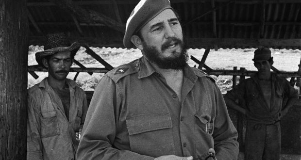

Fidel Alejandro Castro Ruz
"El Comandante"

Cuban leader Fidel Castro during a visit to a farm outside Havana in 1964. Photograph
Here's a time line of Fidel Castro's life:
- Youth: 1926–1947
- Rebellion and Marxism: 1947–1950
- Career in law and politics: 1950–1952
- The Movement and the Moncada Barracks attack: 1952–1953
- Imprisonment and 26 July Movement: 1953–1955
- Guerrilla war: 1956–1959
- Provisional government: 1959
- Consolidating leadership: 1959–1960
- Bay of Pigs Invasion and "Socialist Cuba": 1961–1962
- Cuban Missile Crisis and furthering socialism: 1962–1968
- Economic stagnation and Third World politics: 1969–1974
- Foreign wars and NAM Presidency: 1975–1979
- Reagan and Gorbachev: 1980–1989
- Special Period: 1990–2000
- Pink tide: 2000–2006
- Stepping down: 2006–2008
- Retirement and final years: 2008–2016
Following Castro's death, Cuba's government announced that it would be passing a law prohibiting the naming of "institutions, streets, parks or other public sites, or erecting busts, statues or other forms of tribute" in honor of the late Cuban leader in keeping with his wishes to prevent a cult of personality from developing around him.
If you have time, you should read more about this incredible human being on his Wikipedia entry.